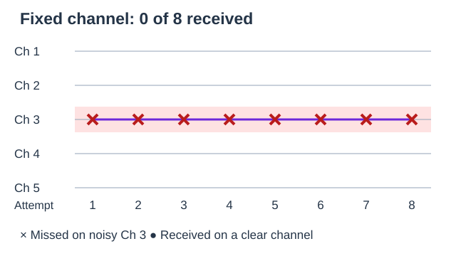
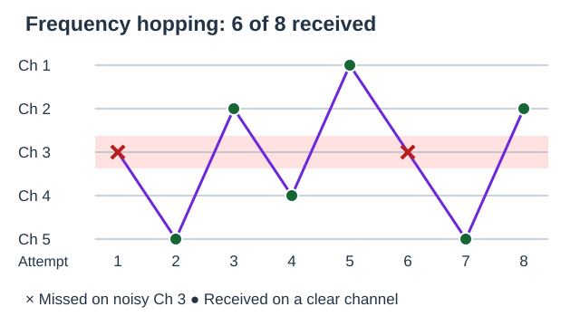

Engineering · Radio Communication · History of Invention
Hedy Lamarr
Hedy Lamarr (1914–2000) was an actor and a self-taught inventor. With musician George Antheil, she designed a way for a radio sender and receiver to change channels together. Their work is an early milestone in the history of wireless communication. How can a shared pattern help a message get through?
Start with a Shared Pattern
Learning goal: Explain why a sender and receiver must change radio channels together, and describe how Lamarr and Antheil combined different skills.
- K–2, together: Read the introduction aloud. Use the channel-card activity below, count successful messages, and explain the pattern with words or pointing.
- Grades 3–5: Read the biography, compare the two diagrams, and try practice questions 1, 2, 4, and 7.
- Grades 6–12: Add the historical context and technical notes, complete all practice questions, and explain the limits of the model.
Words to know: A frequency describes how quickly a radio wave repeats. A radio channel uses a particular frequency range. Interference is an unwanted signal that makes a message harder to receive. Synchronized means coordinated in time.
Who Was Hedy Lamarr?
Hedy Lamarr was born Hedwig Eva Maria Kiesler in Vienna, Austria, in 1914. She worked as an actor in Europe and later in Hollywood, using the stage name Hedy Lamarr. She also explored engineering ideas outside her film career.
Lamarr teamed up with composer George Antheil to design a radio system that changed frequencies in a coordinated pattern. Antheil's experience with player pianos helped them think about timing: matching punched paper rolls could tell the sender and receiver when to switch channels.
They received U.S. Patent 2,292,387 in 1942. A patent records an invention and names its inventors; this one names Hedy Kiesler Markey (Lamarr's legal name at the time) and George Antheil. A patent alone does not show that a design was built or widely used.
Historical context for older students: why 1942?
A Life of Art and Invention
- 1914 Born in Vienna, Austria.
- 1930s Builds an acting career in Europe and then Hollywood.
- 1941 Applies for a communication-system patent with George Antheil.
- 1942 Their patent is granted on August 11.
- 1997 Their invention receives an Electronic Frontier Foundation Pioneer Award.
- 2000 Lamarr dies at age 85.
- 2014 Inducted into the National Inventors Hall of Fame.
What Frequency Hopping Actually Does
Imagine two devices sending a message across a classroom. If they always use channel 3, another signal on channel 3 may interfere with the message. Frequency hopping means changing channels in a shared pattern. The sender and receiver must use the same channel at the same time.
Moving between channels can reduce the time spent on one noisy channel. It cannot remove all interference or guarantee that every message arrives. It also does not make a message secret by itself; modern devices use separate security methods.
The numbers are channel labels, not measurements of frequency.
Open either diagram to enlarge it. Compare eight message attempts with interference on channel 3.


Try It: Channel Cards
- Make two sets of cards numbered 1–5. A sender and a receiver each have one set. A third student observes and counts.
- Agree that channel 3 is noisy. First, both partners hold up 3 for eight turns. Count how many turns avoid channel 3.
- Now both follow 3, 5, 2, 4, 1, 3, 5, 2, one card each time the teacher says “next.” Count the turns on clear channels. Predict first, then check: did six of eight get through?
- Try again with the receiver one turn behind. Compare the cards: why is a shared pattern alone insufficient without shared timing?
Model limit: Cards stand for radio channels; no radio equipment is needed. We assume noise blocks channel 3 completely and all other channels are clear. Real signals, noise, timing, and recovery of missing data are more complicated.
Technical note: what does “spread spectrum” mean?
Technical note: how does this relate to Bluetooth?
Lamarr's Key Contributions
With George Antheil, patented a "Secret Communication System" using synchronized frequency changes to resist radio jamming.
Their patent is an early example of coordinated frequency hopping. Bluetooth provides a modern example of the same general technique.
Worked as a professional actor while also exploring technical problems. Her interests crossed the arts and engineering.
Pursued invention as a hobby outside any formal STEM career or training, working problems out at home between film shoots.
Combined her radio ideas with George Antheil's experience coordinating mechanical music instruments.
Her invention was recognized during her lifetime in 1997 and after her death with a 2014 National Inventors Hall of Fame induction.
Lamarr's Legacy Today
Lamarr's story invites us to look at a person's work across more than one field. An acting career and an interest in engineering can exist together. Her collaboration with Antheil shows how musical timing and radio design can meet in a new idea.
Give both collaborators credit, and distinguish an early patent from a finished modern device. Bluetooth is a useful comparison because it uses frequency hopping. Wi-Fi and GPS use different radio methods; they should not be described as direct copies of this patent.
Discuss: What different skills could two classmates bring to a design problem? What evidence would you use to explain each person's contribution?
Practice Problems
Think about frequency hopping, invention, and Lamarr's life.
Easy1. In what year were Lamarr and Antheil granted their frequency-hopping patent?
Easy2. In our classroom model, what problem can channel hopping help reduce?
Medium3. How many years passed between the 1942 frequency-hopping patent and the 1997 EFF Pioneer Award?
Medium4. Which everyday technology uses coordinated frequency hopping?
Challenge5. What mechanism inspired Antheil's approach to keeping transmitter and receiver synchronized while hopping frequencies?
Medium6. If a frequency-hopping transmitter switches to a new frequency 50 times per second, how many frequency switches occur in 4 seconds?
Easy7. What stage name did Hedwig Eva Maria Kiesler use as an actor?
Challenge8. Which evidence identifies Lamarr and Antheil as collaborators on the 1942 invention?
Sources and Diagram Credits
All teaching diagrams are original ClassroomOS schematics, not historical photographs or patent reproductions. They illustrate a simplified classroom model.
- National Inventors Hall of Fame: Hedy Lamarr — biography and recognition.
- Bluetooth SIG: technology overview — current channel-hopping comparison.